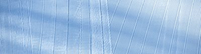
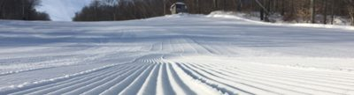
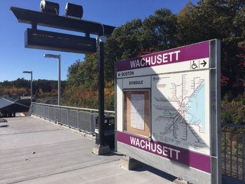
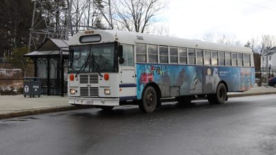
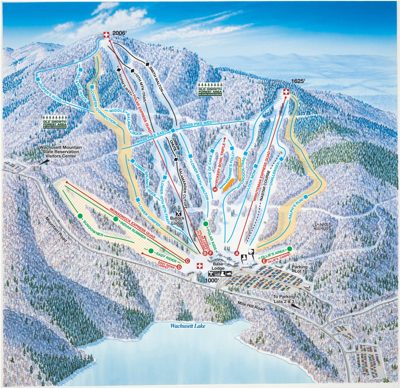
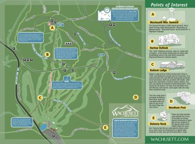
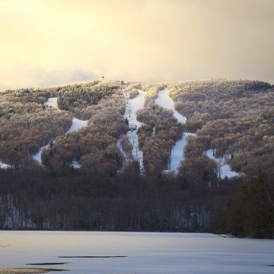
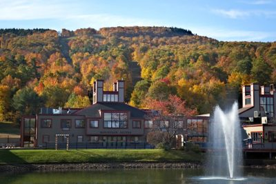

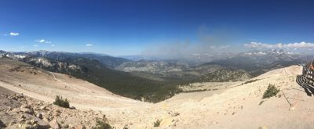

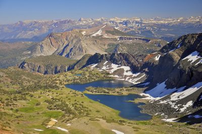
.jpg){kind=link}
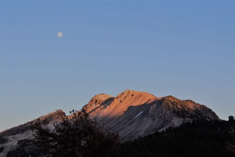

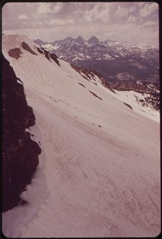
.jpg){kind=link}
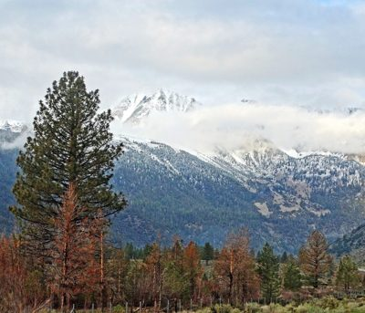

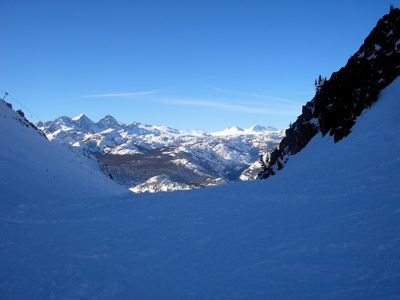

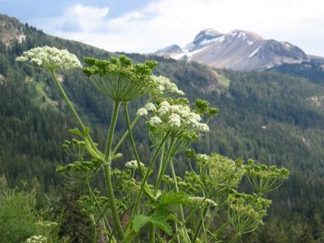

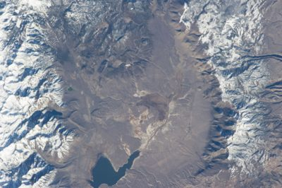

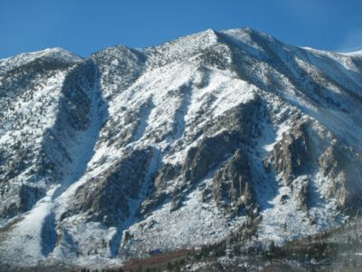
_03.JPG){kind=link}
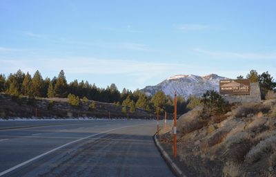
_12.JPG){kind=link}
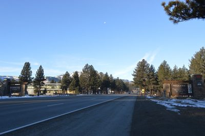
_18.JPG){kind=link}
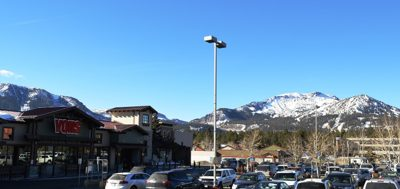

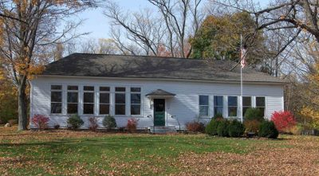

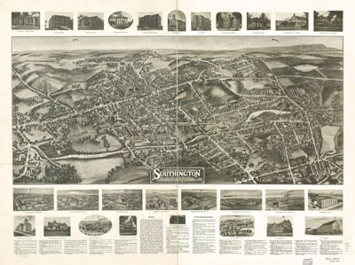
.jpg){kind=link}
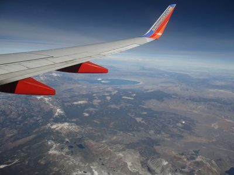
_04.JPG){kind=link}
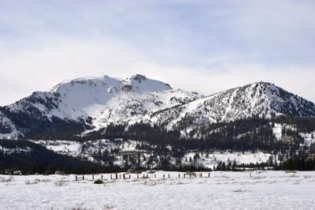
_01.JPG){kind=link}
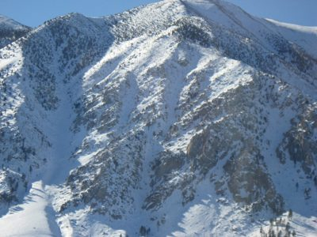
_08.JPG){kind=link}
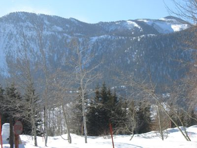
_11.JPG){kind=link}
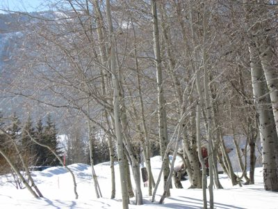
.JPG){kind=link}
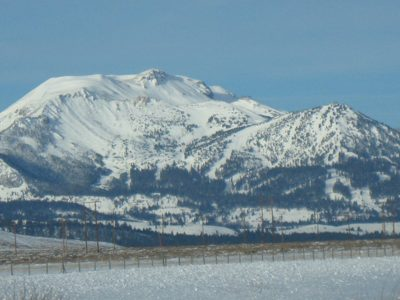
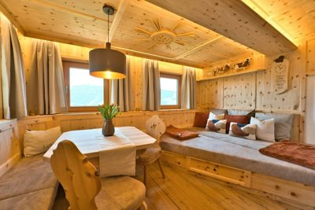

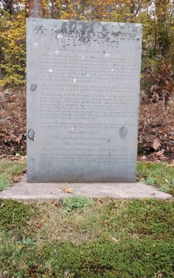

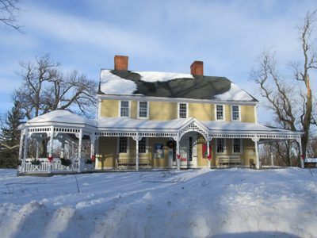

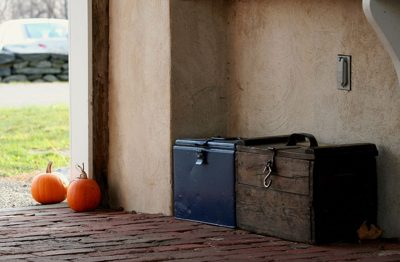

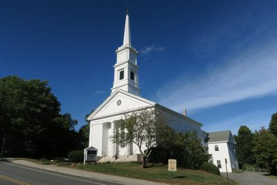

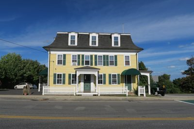

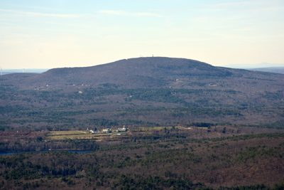

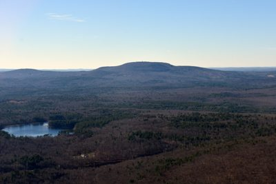

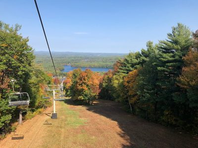

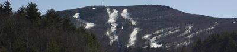

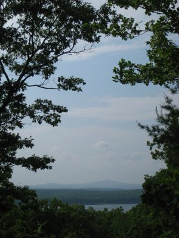

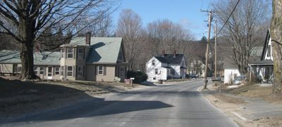

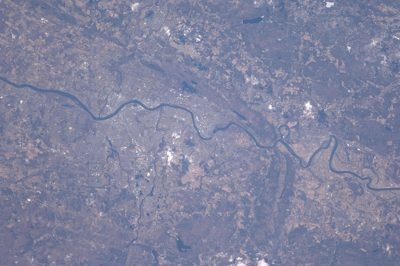

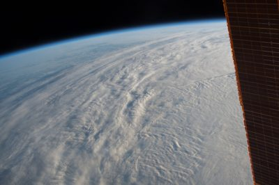
ski-wachusett — research
source: https://www.wachusett.com/
title: Home - Wachusett Mountain
meta description: With 27 trails, 8 lifts, and a 2006 foot summit, Wachusett Mountain is New England's most accessible ski resort.
meta og:description: With 27 trails, 8 lifts, and a 2006 foot summit, Wachusett Mountain is New England's most accessible ski resort.
meta og:site_name: Wachusett Mountain
fonts: inherit
css hexes: #ffffff(17), #01365e(12), #003865(10), #dc4405(6), #0280e5(4), #0063b2(4), #004d8a(4), #32373c(3), #202020(3), #313131(2), #00d084(2), #0693e3(2)
headings
- Celebrate Fall at Wachusett Mountain
- Wachusett Mountain
copy
Home - Wachusett Mountain Applefest 10/17 & 10/18: Celebrate Autumn, Apples, and Foliage on the Mountain Buy Tickets Here About Image About Wachusett Hours of Operation First Time Visitor Guide Directions, Parking, Lodging Ski Train Schedule FAQs Snow Report Resort Maps David Crowley Sr. Partners Science on the Slopes Resort Services Shopping (MTNSide) Food & Beverage Slope Skyboxes Gift Cards (COW) Locker Rentals Lost & Found Ski Patrol & Safety Cancellation Request Form SKI & RIDE Image Tickets & Passes Season Passes Group Season Passes Lift Tickets Group Trips School Groups Terrain Parks Perks for Passholders Lessons Beginner Packages (9+) Group Lessons (9+) Polar Kids (4-8) Arctic Aces (9-14) Season-Long Kids Programs Private Lessons Bring A Friend Return to Learn Adaptive Lessons Instructor Training Rentals Equipment Rentals Demo Center GORE-TEX Clothing Rentals Racing & Clinics Image Racing NASTAR Race League Registration Race League Information & Results Central Mass Ski League Clinics Women’s Clinics Break Thru Clinics MTNSIDE SHOP EVENTS Meetings & Weddings Image Meetings Weddings Mountain Suites Corporate Outings Social Events Proms & Formals Festival Fun-ctions Snow Report & Video Webcam Ticket Celebrate Fall at Wachusett Mountain Explore Events Explore Events .quick-links-section__item0:hover svg path { fill: #003865; } .quick-links-section__item1:hover svg path { fill: #0280e5; } .quick-links-section__item2:hover svg path { fill: #0063b2; } .quick-links-section__item3:hover svg path { fill: #004d8a; } Season Passes COW Cards Events Webcams Two Weekends of AppleFest Celebrate all things fall at AppleFest, October 17–18 and 24–25 ! Enjoy cider donuts, live music, local crafters and Scenic SkyRide views. Buy in advance to save! All Things Applefest Calling All Ghosts & Goblins Get your costumes ready! BooFest returns October 31–November 1 with Halloween fun for the whole family. Enjoy costume contests, pumpkin painting, trick-or-treating, and SkyRides to the summit. Get Spooky Meet On The Mountain Trade the boardroom for fresh air, delicious food, and beautiful mountain views. From casual BBQs to laid-back team building, Wachusett makes it easy to bring everyone together. Plan your next team event with us. Book Today Ready, Set, Race! Add some friendly competition to your winter with Wachusett’s Race League! Open to all levels, our weekly races are a great way to spend more time on the slopes. Gather your crew or let us find you a team. Go Racing Become an Instructor This is your chance to join the Wachusett team teaching skiing and snowboarding. Sign up now for our November training course, and learn how to teach on the slopes! Learn More Countdown to Winter Chilly nights are here, and we’ll be firing up the snow guns before you know it! Get ready for the season ahead with a 2026/27 Season Pass and make Wachusett part of your winter plans. Get Your Pass Home Contact Privacy Policy Employment Website Accessibility Donation Requests Wachusett Mountain Ski Area 499 Mountain Rd, Princeton MA 01541 (978) 464-2300 © 2026 Wachusett Mountain. All Rights Reserved. Item(s) Added! Error Adding Item The product has been added to cart successfully. Click "View Cart" to check out or continue shopping. We're sorry, but we were unable to add the item to the cart. Continue Shopping View Cart Contact Us We are using cookies to give you the best experience on our website. You can find
refs kept (people-screened)
- 00.jpg: The image is a solid dark blue color with no discernible content or features. | logo=False | palette ['#01365e', '#7291a4', '#01365d', '#023663', '#01335b']
- 03.jpg: The image contains only a black border on a white background with no discernible content. | logo=False | palette ['#ffffff']
- 04.jpg: A snowy mountain with ski slopes and chairlifts surrounded by a forest during sunset. | logo=False | palette ['#2e2d33', '#a7a4a3', '#635d61', '#fef6cd', '#ebdbbe']
- 09.svg: svg logo | logo=True | palette []
- site01.jpg: An aerial view of snow-covered ground with visible ski runs and grooming patterns. | logo=False | palette ['#9fc0e2', '#b9d2ea', '#95b8de', '#84aad5', '#90b5dc'] | SOURCE site: Hours of Operation - Wachusett Mountain — www.wachusett.com https://www.wachusett.com/the-mountain/your-visit/hours/
- site03.jpg: A snow-covered slope with groomed tracks leading up to a small building surrounded by trees. | logo=False | palette ['#8995a8', '#a8b0be', '#4c4f57', '#edece8', '#d2d4d5'] | SOURCE site: First Time Visitor Guide - Wachusett Mountain — www.wachusett.com https://www.wachusett.com/first-time-visitor-guide/
- site05.jpg: An empty train station platform with a sign that reads 'WACHUSETT' and displays a transit map. | logo=False | palette ['#24222c', '#4e484f', '#b1b1b7', '#7985a6', '#d1d2d2'] | SOURCE site: Ski Train Schedule - Wachusett Mountain — www.wachusett.com https://www.wachusett.com/the-mountain/your-visit/skitrain/
- site06.jpg: A bus with an advertisement for Wachusett Mountain and Polar is parked on a wet street near a bus stop. | logo=True | palette ['#58595b', '#828385', '#282624', '#f8f9fb', '#b2b3b4'] | SOURCE site: Ski Train Schedule - Wachusett Mountain — www.wachusett.com https://www.wachusett.com/the-mountain/your-visit/skitrain/
- site08.jpg: The image is entirely blank with no visible content. | logo=False | palette ['#ffffff'] | SOURCE site: Snow Report - Wachusett Mountain — www.wachusett.com https://www.wachusett.com/the-mountain/your-visit/snow-report/
- site10.jpg: This is a ski resort map showing trails, lifts, and facilities at Wachusett Mountain. | logo=False | palette ['#a9b1bf', '#b1cee0', '#5796b9', '#cdccd1', '#d8e3e5'] | SOURCE site: Resort Maps - Wachusett Mountain — www.wachusett.com https://www.wachusett.com/the-mountain/about-wachusett/trail-map/
- site11.jpg: This is a map of Wachusett Mountain showing trails, points of interest, and facilities. | logo=True | palette ['#85a380', '#6c8c5a', '#adc2a4', '#75956a', '#5f8b66'] | SOURCE site: Resort Maps - Wachusett Mountain — www.wachusett.com https://www.wachusett.com/the-mountain/about-wachusett/trail-map/
- site14.jpg: A snowy mountain with ski slopes and trees covered in frost under a cloudy sky. | logo=False | palette ['#2e2d33', '#a7a4a3', '#635d61', '#fef6cd', '#ebdbbe'] | SOURCE site: Home - Wachusett Mountain — www.wachusett.com https://www.wachusett.com/
- site18.jpg: A scenic view of a resort with a fountain in the foreground and autumn-colored trees on a hillside behind it. | logo=False | palette ['#4e4537', '#756348', '#2c2d2b', '#cdecfd', '#a1aaa9'] | SOURCE site: Home - Wachusett Mountain — www.wachusett.com https://www.wachusett.com/
- commons02.jpg: A panoramic view of a mountainous landscape with forests, rocky terrain, and distant snow-capped peaks under a clear blue sky. | logo=False | palette ['#e0d3bc', '#364b71', '#436eae', '#97a2ac', '#757470'] | SOURCE commons: 2018 07 01-11.54.30.878-CDT.jpg — USFS · Wikimedia Commons · PUBLIC-DOMAIN https://commons.wikimedia.org/wiki/File:2018_07_01-11.54.30.878-CDT.jpg
- commons03.jpg: A breathtaking aerial view of a mountainous landscape featuring snow-dusted peaks, rugged terrain, and a serene blue lake surrounded by green vegetation. | logo=False | palette ['#767162', '#3c414e', '#8d8673', '#95968f', '#a7a9ad'] | SOURCE commons: Alger Lakes Ansel Adams Wilderness.jpg — Steve Dunleavy from Lake Tahoe, NV, United States · Wikimedia Commons · CC-BY https://commons.wikimedia.org/wiki/File:Alger_Lakes_Ansel_Adams_Wilderness.jpg
- commons04.jpg: The image shows a mountain range at sunset with the moon visible in the sky. | logo=False | palette ['#7694bc', '#131113', '#8199b6', '#8b9eb2', '#6a738b'] | SOURCE commons: Almost full moon over Mammoth Mountain (51297541759).jpg — Region 5 Photography · Wikimedia Commons · PUBLIC-DOMAIN https://commons.wikimedia.org/wiki/File:Almost_full_moon_over_Mammoth_Mountain_(51297541759).jpg
- commons09.jpg: A wide-angle view of a snow-covered mountain slope with distant peaks under a cloudy sky. | logo=False | palette ['#937479', '#a68a8b', '#442d38', '#b39b99', '#bba6a1'] | SOURCE commons: California - Mammoth Mt - NARA - 543507.jpg — Dick Rowan · Wikimedia Commons · PUBLIC-DOMAIN https://commons.wikimedia.org/wiki/File:California_-_Mammoth_Mt_-_NARA_-_543507.jpg
- commons14.jpg: A snow-capped mountain range rises behind a forest of evergreen and autumn-colored trees under an overcast sky. | logo=False | palette ['#e1e6e9', '#483a2d', '#5f7180', '#bdc9d3', '#52595d'] | SOURCE commons: Clouds on Mammoth Mountain 5-15 (20605748418).jpg — Don Graham from Redlands, CA, USA - God bless it! · Wikimedia Commons · CC-BY-SA https://commons.wikimedia.org/wiki/File:Clouds_on_Mammoth_Mountain_5-15_(20605748418).jpg
- commons15.jpg: A breathtaking view of snow-covered mountains under a clear blue sky. | logo=False | palette ['#285493', '#78b0e8', '#4174b8', '#2e5895', '#1d3b69'] | SOURCE commons: Dry Creek Mammoth Mountain.jpg — Sean Lynch (talk · contribs) · Wikimedia Commons · PUBLIC-DOMAIN https://commons.wikimedia.org/wiki/File:Dry_Creek_Mammoth_Mountain.jpg
- commons16.jpg: A close-up of white flowers and green stems with a mountainous forest background. | logo=False | palette ['#d5dcdd', '#394535', '#6a7a56', '#54624c', '#485c44'] | SOURCE commons: Heracleum lanatum from High Trail.jpg — Dcrjsr · Wikimedia Commons · CC-BY-SA https://commons.wikimedia.org/wiki/File:Heracleum_lanatum_from_High_Trail.jpg
- commons17.jpg: This is an aerial view of a mountainous region with snow-covered peaks and valleys, featuring bodies of water and rugged terrain. | logo=False | palette ['#878991', '#b9bdbf', '#707786', '#7c7b85', '#59667b'] | SOURCE commons: ISS035-E-8470 - View of California.jpg — Earth Science and Remote Sensing Unit, Lyndon B. Johnson Space Center · Wikimedia Commons · PUBLIC-DOMAIN https://commons.wikimedia.org/wiki/File:ISS035-E-8470_-_View_of_California.jpg
- commons21.jpg: A snow-covered mountain range with exposed rock faces under a clear blue sky. | logo=False | palette ['#304655', '#4d677a', '#5781a4', '#8f9ea5', '#bec9cc'] | SOURCE commons: Mammoth 118.jpg — Clfekete · Wikimedia Commons · CC-BY-SA https://commons.wikimedia.org/wiki/File:Mammoth_118.jpg
- commons22.jpg: A road leads toward a sign welcoming visitors to Mammoth Lakes, California, with snow-capped mountains visible in the background. | logo=False | palette ['#bcdcf2', '#343335', '#94b8db', '#434a57', '#62584e'] | SOURCE commons: Mammoth Lakes (Dec 2013) 03.JPG — Nandaro · Wikimedia Commons · CC-BY-SA https://commons.wikimedia.org/wiki/File:Mammoth_Lakes_(Dec_2013)_03.JPG
- commons23.jpg: A wide road lined with tall pine trees leads into the town of Mammoth Lakes, with snow-capped mountains visible in the distance under a clear blue sky. | logo=False | palette ['#86b4f1', '#b1dafd', '#324050', '#202a37', '#5e6264'] | SOURCE commons: Mammoth Lakes (Dec 2013) 12.JPG — Nandaro · Wikimedia Commons · CC-BY-SA https://commons.wikimedia.org/wiki/File:Mammoth_Lakes_(Dec_2013)_12.JPG
- commons24.jpg: A Vons supermarket with a parking lot full of cars, set against snow-capped mountains under a clear blue sky. | logo=True | palette ['#70b4f4', '#27292f', '#82cefe', '#6b819f', '#afdff6'] | SOURCE commons: Mammoth Lakes (Dec 2013) 18.JPG — Nandaro · Wikimedia Commons · CC-BY-SA https://commons.wikimedia.org/wiki/File:Mammoth_Lakes_(Dec_2013)_18.JPG
- commons25.jpg: A white building with a green door and multiple windows surrounded by autumn foliage and bare trees. | logo=False | palette ['#625c48', '#3e3a32', '#7c7260', '#898f9a', '#aec1d6'] | SOURCE commons: 1135 Marion Schoolhouse.jpg — Sphilbrick · Wikimedia Commons · CC-BY-SA https://commons.wikimedia.org/wiki/File:1135_Marion_Schoolhouse.jpg
- commons28.jpg: This is an aerial photograph of Southington, Connecticut from 1914, showcasing the town's layout, buildings, and surrounding landscape. | logo=False | palette ['#f8f3e7', '#737060', '#989482', '#898674', '#c5c0af'] | SOURCE commons: Aero view of Southington, Connecticut 1914. LOC 75693163.jpg — Hughes & Bailey · Wikimedia Commons · PUBLIC-DOMAIN https://commons.wikimedia.org/wiki/File:Aero_view_of_Southington,_Connecticut_1914._LOC_75693163.jpg
- commons34.jpg: An aerial view from a Southwest Airlines plane shows a landscape with mountains and lakes below. | logo=True | palette ['#605b63', '#6d7581', '#2f3f58', '#8190a2', '#a2a9ad'] | SOURCE commons: Mammoth Lakes, California (10753620965).jpg — Ken Lund from Reno, Nevada, USA · Wikimedia Commons · CC-BY-SA https://commons.wikimedia.org/wiki/File:Mammoth_Lakes,_California_(10753620965).jpg
- commons35.jpg: A snow-covered mountain range with ski slopes and dense forests under a cloudy sky. | logo=False | palette ['#cbd0e1', '#393b44', '#abaebc', '#dadce6', '#eceaef'] | SOURCE commons: Mammoth Lakes (Feb 2013) 04.JPG — Nandaro · Wikimedia Commons · CC-BY-SA https://commons.wikimedia.org/wiki/File:Mammoth_Lakes_(Feb_2013)_04.JPG
- commons36.jpg: A snow-covered mountain range with exposed rock faces and sparse vegetation under a clear blue sky. | logo=False | palette ['#556d8a', '#455970', '#69809d', '#88a0b9', '#bfc8cf'] | SOURCE commons: Mammoth Lakes (January 2008) 01.JPG — Nandaro · Wikimedia Commons · CC-BY-SA https://commons.wikimedia.org/wiki/File:Mammoth_Lakes_(January_2008)_01.JPG
- commons37.jpg: A snowy landscape with bare trees and snow-covered mountains in the background under a clear blue sky. | logo=False | palette ['#6b7682', '#798ca2', '#50565b', '#ddf1fc', '#a3c1dd'] | SOURCE commons: Mammoth Lakes (January 2008) 08.JPG — Nandaro · Wikimedia Commons · CC-BY-SA https://commons.wikimedia.org/wiki/File:Mammoth_Lakes_(January_2008)_08.JPG
- commons38.jpg: A snowy landscape filled with bare trees, likely in a winter setting. | logo=False | palette ['#7d7974', '#8a898a', '#635e57', '#eceff3', '#9ea2a8'] | SOURCE commons: Mammoth Lakes (January 2008) 11.JPG — Nandaro · Wikimedia Commons · CC-BY-SA https://commons.wikimedia.org/wiki/File:Mammoth_Lakes_(January_2008)_11.JPG
- commons40.jpg: A snow-covered mountain range with visible power lines and fencing in the foreground under a clear blue sky. | logo=False | palette ['#769aaf', '#4b5f6e', '#9baaad', '#748fa0', '#b6c2bf'] | SOURCE commons: Mammoth Mountain (December 2008).JPG — Nandaro · Wikimedia Commons · CC-BY-SA https://commons.wikimedia.org/wiki/File:Mammoth_Mountain_(December_2008).JPG
- unsplash01.jpg: This image shows the interior of a cozy wooden cabin with a dining table, chairs, and built-in seating areas, featuring warm lighting and scenic mountain views through the windows. | logo=False | palette ['#a46e34', '#c18a49', '#82501e', '#cfa56e', '#e4d1a2'] | SOURCE unsplash: Cozy wooden room with seating and dining area — Photo by Dominik Neuner on Unsplash https://unsplash.com/photos/cozy-wooden-room-with-seating-and-dining-area-ZI3HqTw-Ua4
- unsplash02.jpg: A store shelf stocked with various brands of beer and alcoholic beverages in cans and bottles. | logo=True | palette ['#d2c48c', '#1d1416', '#83a295', '#846450', '#3c495a'] | SOURCE unsplash: Shelves stocked with various beer brands and types — Photo by David Trinks on Unsplash https://unsplash.com/photos/shelves-stocked-with-various-beer-brands-and-types-r13zDDswPbA
- ski01.jpg: A weathered stone monument displaying the Ten Commandments in an outdoor setting surrounded by foliage. | logo=False | palette ['#847b57', '#b5b7be', '#62553a', '#a4a195', '#c2bfc4'] | SOURCE ski: "Little Watchusett" mountain marker, tone of religion and philosophy, colonial era.jpg — Buffalo mouse · ski · cc-by-sa https://commons.wikimedia.org/wiki/File:%22Little_Watchusett%22_mountain_marker,_tone_of_religion_and_philosophy,_colonial_era.jpg
- ski05.jpg: A yellow colonial-style house with a snow-covered roof and porch is decorated for the holidays in a winter landscape. | logo=False | palette ['#7b8ba2', '#aac0de', '#575c64', '#9cadc3', '#b8cce5'] | SOURCE ski: Abijah Moore Tavern, c 1748, Princeton MA.jpg — John Phelan · ski · cc-by-sa https://commons.wikimedia.org/wiki/File:Abijah_Moore_Tavern,_c_1748,_Princeton_MA.jpg
- ski06.jpg: Two pumpkins and two old toolboxes sit on a brick porch next to a doorway. | logo=False | palette ['#8f7f70', '#cbc4ad', '#53382b', '#241e1d', '#635042'] | SOURCE ski: Autumn farm - panoramio.jpg — Picturas · ski · cc-by https://commons.wikimedia.org/wiki/File:Autumn_farm_-_panoramio.jpg
- ski08.jpg: A white church with a tall steeple stands under a clear blue sky, surrounded by trees and a roadside sign. | logo=False | palette ['#163869', '#3c5673', '#8a9db2', '#121e26', '#28415a'] | SOURCE ski: First Congregational Church, Princeton MA.jpg — John Phelan · ski · cc-by-sa https://commons.wikimedia.org/wiki/File:First_Congregational_Church,_Princeton_MA.jpg
- ski10.jpg: A yellow two-story house with green shutters and a white picket fence is shown under a blue sky. | logo=False | palette ['#4a5665', '#6e88a6', '#2a3845', '#586d84', '#b7b6a7'] | SOURCE ski: Gregory, David Hoyt and Company General Store, Princeton MA.jpg — John Phelan · ski · cc-by-sa https://commons.wikimedia.org/wiki/File:Gregory,_David_Hoyt_and_Company_General_Store,_Princeton_MA.jpg
- ski11.jpg: An aerial view of a forested mountain range with wind turbines and scattered buildings in the distance. | logo=False | palette ['#4b5463', '#303035', '#f7f8e9', '#e6f7f3', '#909ba7'] | SOURCE ski: Mount Wachusett Aerial 1.JPG — Nick Allen · ski · cc-by-sa https://commons.wikimedia.org/wiki/File:Mount_Wachusett_Aerial_1.JPG
- ski12.jpg: An aerial view of a vast forested landscape with rolling hills and a lake under a clear blue sky. | logo=False | palette ['#211d1f', '#323640', '#c1ddee', '#e5eae3', '#7693b1'] | SOURCE ski: Mount Wachusett Aerial 2.JPG — Nick Allen · ski · cc-by-sa https://commons.wikimedia.org/wiki/File:Mount_Wachusett_Aerial_2.JPG
- ski17.jpg: A scenic view from a ski lift showing autumn foliage and a lake surrounded by forests under a clear blue sky. | logo=False | palette ['#1e2018', '#aca18a', '#6c643f', '#93bef3', '#b4cfef'] | SOURCE ski: Wachusett Mountain Ski Lift.jpeg — Kestreltail · ski · cc-by-sa https://commons.wikimedia.org/wiki/File:Wachusett_Mountain_Ski_Lift.jpeg
- ski18.jpg: A wide-angle view of a snow-covered mountain with ski slopes and forested areas surrounding it. | logo=False | palette ['#40444f', '#20211f', '#afc2d8', '#303235', '#8895a3'] | SOURCE ski: Wachusett Mountain in winter.gk.jpg — Grendelkhan · ski · cc-by-sa https://commons.wikimedia.org/wiki/File:Wachusett_Mountain_in_winter.gk.jpg
- ski19.jpg: A view of a distant mountain range and body of water framed by dense trees in the foreground. | logo=False | palette ['#10140e', '#9aaab9', '#2c3731', '#7a8992', '#a5b5c4'] | SOURCE ski: Wachusett vista, Tower Hill Botanic Garden.JPG — Daderot · ski · public-domain https://commons.wikimedia.org/wiki/File:Wachusett_vista,_Tower_Hill_Botanic_Garden.JPG
- ski20.jpg: A quiet residential street with houses and bare trees under a clear blue sky. | logo=False | palette ['#2d3236', '#818385', '#616261', '#959ca2', '#a4bdd4'] | SOURCE ski: East Princeton, Massachusetts.jpg — Wikimedia Commons · ski · cc-by-sa https://commons.wikimedia.org/wiki/File:East_Princeton,_Massachusetts.jpg
- ski23.jpg: This is an aerial view of a river winding through a densely populated urban area with surrounding rural land. | logo=False | palette ['#7b7e99', '#83859f', '#6d7797', '#8b8ba3', '#9997ac'] | SOURCE ski: ISS030-E-109567 - View of Earth.jpg — Earth Science and Remote Sensing Unit, Lyndon B. Johnson Space Center · ski · public-domain https://commons.wikimedia.org/wiki/File:ISS030-E-109567_-_View_of_Earth.jpg
- ski24.jpg: This image shows a view of Earth from space, with clouds covering the planet and part of a spacecraft's solar panel visible on the right side. | logo=False | palette ['#858b91', '#0f090a', '#969da1', '#5b626b', '#adaeae'] | SOURCE ski: ISS050-E-57408 - View of Earth.jpg — Earth Science and Remote Sensing Unit, Lyndon B. Johnson Space Center · ski · public-domain https://commons.wikimedia.org/wiki/File:ISS050-E-57408_-_View_of_Earth.jpg
- ski25.jpg: A quiet rural road lined with trees leads past an old church building and a vintage van parked near a pile of logs. | logo=False | palette ['#7d8276', '#efefed', '#1a2315', '#2f3d23', '#445334'] | SOURCE ski: MA Route 140 southbound, East Princeton MA.jpg — John Phelan · ski · cc-by-sa https://commons.wikimedia.org/wiki/File:MA_Route_140_southbound,_East_Princeton_MA.jpg
- ski26.jpg: This image shows a handwritten document with cursive text on aged paper, containing poetic content about grief and loss. | logo=False | palette ['#ece4c5', '#efe7c8', '#f6f7f7', '#e3dabb', '#f2ecd5'] | SOURCE ski: Maria (White) Lowell to Fanny (Appleton) Longfellow, 20 September 1848 (43741f90-1b39-407f-9245-62036bdfc1fe).jpg — Maria (White) Lowell (1821-1853) · ski · public-domain https://commons.wikimedia.org/wiki/File:Maria_(White)_Lowell_to_Fanny_(Appleton)_Longfellow,_20_September_1848_(43741f90-1b39-407f-9245-62036bdfc1fe).jpg
- ski27.jpg: This image shows a handwritten document with poetry written in cursive script on aged paper. | logo=False | palette ['#eee7c8', '#ebe3c4', '#f6f7f8', '#ded5b5', '#f1edda'] | SOURCE ski: Maria (White) Lowell to Fanny (Appleton) Longfellow, 20 September 1848 (c7c73a7b-d1d1-4d35-b157-2c60d195b033).jpg — Maria (White) Lowell (1821-1853) · ski · public-domain https://commons.wikimedia.org/wiki/File:Maria_(White)_Lowell_to_Fanny_(Appleton)_Longfellow,_20_September_1848_(c7c73a7b-d1d1-4d35-b157-2c60d195b033).jpg
- ski28.jpg: This is an old handwritten letter with no visible human faces or bodies. | logo=False | palette ['#eee4c3', '#f1e8c8', '#f9fafa', '#e7ddba', '#f4eccf'] | SOURCE ski: Maria (White) Lowell to Fanny (Appleton) Longfellow, 20 September 1848 (d5953121-398c-4afb-8790-a3dc6f4189d4).jpg — Maria (White) Lowell (1821-1853) · ski · public-domain https://commons.wikimedia.org/wiki/File:Maria_(White)_Lowell_to_Fanny_(Appleton)_Longfellow,_20_September_1848_(d5953121-398c-4afb-8790-a3dc6f4189d4).jpg
- ski32.jpg: A rocky coastal area with a large telecommunications tower and a distant view of the ocean. | logo=False | palette ['#927f67', '#c3d0e0', '#6f5d48', '#cad3df', '#b7b7b7'] | SOURCE ski: Peak of Mount Wachusett - panoramio (2).jpg — LEONARDO DASILVA · ski · cc-by https://commons.wikimedia.org/wiki/File:Peak_of_Mount_Wachusett_-_panoramio_(2).jpg
- ski33.jpg: A tall telecommunications tower with multiple antennas and satellite dishes stands on a rocky hillside near a building. | logo=False | palette ['#c1ccdf', '#37322f', '#cdd5e2', '#d5dbe5', '#979ba5'] | SOURCE ski: Peak of Mount Wachusett - panoramio (3).jpg — LEONARDO DASILVA · ski · cc-by https://commons.wikimedia.org/wiki/File:Peak_of_Mount_Wachusett_-_panoramio_(3).jpg
- ski34.jpg: A historic stone building with a clock tower stands surrounded by snow-covered ground and bare trees under a clear blue sky. | logo=False | palette ['#6180ae', '#4b4a49', '#556b8f', '#cdcfcf', '#879bb4'] | SOURCE ski: Princeton Public Library in winter, Princeton MA.jpg — John Phelan · ski · cc-by https://commons.wikimedia.org/wiki/File:Princeton_Public_Library_in_winter,_Princeton_MA.jpg
- ski35.jpg: The image shows the interior of a library with bookshelves, a spiral staircase, and Christmas decorations. | logo=False | palette ['#815345', '#42332a', '#9b8472', '#b3afa1', '#c7c5b6'] | SOURCE ski: Princeton Public Library interior, Princeton MA.jpg — John Phelan · ski · cc-by https://commons.wikimedia.org/wiki/File:Princeton_Public_Library_interior,_Princeton_MA.jpg
- ski40.jpg: A white gazebo with a stone base sits on a well-maintained grassy field under a blue sky filled with fluffy clouds, with trees and buildings visible in the background. | logo=False | palette ['#597038', '#6c93bc', '#3a4828', '#a8bccf', '#dfe5ea'] | SOURCE ski: Town Common, Princeton MA.jpg — John Phelan · ski · cc-by https://commons.wikimedia.org/wiki/File:Town_Common,_Princeton_MA.jpg
- ski43.jpg: A small brown mushroom grows among fallen leaves on the forest floor. | logo=False | palette ['#775a31', '#9b7549', '#4e3a1c', '#b28e5e', '#c8a979'] | SOURCE ski: Entoloma luteum 322663609.jpg — Alex Karasoulos · ski · cc-by https://commons.wikimedia.org/wiki/File:Entoloma_luteum_322663609.jpg
- ski46.jpg: A large yellow house with multiple gables and dormer windows stands beside a road under a blue sky with scattered clouds. | logo=False | palette ['#505349', '#1f201b', '#5d89b7', '#567392', '#a6b6c4'] | SOURCE ski: Fernside-Vacation House for Working Girls.jpg — Izzysanime · ski · cc-by-sa https://commons.wikimedia.org/wiki/File:Fernside-Vacation_House_for_Working_Girls.jpg
- ski47.jpg: A deceased fox is lying on its side in the middle of a frozen body of water. | logo=False | palette ['#74777d', '#575a61', '#939396', '#b6b9be', '#cfd7e0'] | SOURCE ski: Frozen Red Fox.jpg — Lisa Utzig · ski · cc-by https://commons.wikimedia.org/wiki/File:Frozen_Red_Fox.jpg
- ski48.jpg: This is an aerial view of a rural area with forests, lakes, and roads. | logo=False | palette ['#576246', '#4a5b40', '#6b755b', '#545c43', '#3d483b'] | SOURCE ski: M 4207125 se 19 060 20211019.tif — NOAA Office for Coastal Management / The USDA-FSA Aerial Photography Field offic · ski · public-domain https://commons.wikimedia.org/wiki/File:M_4207125_se_19_060_20211019.tif
- ski49.jpg: An aerial view of a rural landscape with forests, lakes, and roads. | logo=False | palette ['#5a8476', '#4c7b6c', '#557c74', '#7d998b', '#476e6b'] | SOURCE ski: M 4207125 se 19 h 20160728.tif — NOAA Office for Coastal Management / The USDA-FSA Aerial Photography Field offic · ski · public-domain https://commons.wikimedia.org/wiki/File:M_4207125_se_19_h_20160728.tif
- ski50.jpg: This is an aerial view of a rural area with forests, lakes, and some developed land including roads and buildings. | logo=False | palette ['#4c5941', '#525e43', '#5a6448', '#3f4a3c', '#6f7a63'] | SOURCE ski: M 4207126 sw 19 060 20211019.tif — NOAA Office for Coastal Management / The USDA-FSA Aerial Photography Field offic · ski · public-domain https://commons.wikimedia.org/wiki/File:M_4207126_sw_19_060_20211019.tif
- ski51.jpg: An aerial view of a forested area with lakes, roads, and a large industrial facility surrounded by greenery. | logo=False | palette ['#537c71', '#598376', '#628b7c', '#4a6f6d', '#829f92'] | SOURCE ski: M 4207126 sw 19 h 20160824.tif — NOAA Office for Coastal Management / The USDA-FSA Aerial Photography Field offic · ski · public-domain https://commons.wikimedia.org/wiki/File:M_4207126_sw_19_h_20160824.tif
- ski52.jpg: This is an aerial view of a rural landscape with forests, fields, and bodies of water. | logo=False | palette ['#505d42', '#566244', '#5d6746', '#45503d', '#68724f'] | SOURCE ski: M 4207133 ne 19 060 20211019.tif — NOAA Office for Coastal Management / The USDA-FSA Aerial Photography Field offic · ski · public-domain https://commons.wikimedia.org/wiki/File:M_4207133_ne_19_060_20211019.tif
- ski53.jpg: This is an aerial view of a rural landscape with forests, fields, and bodies of water. | logo=False | palette ['#507e6f', '#558472', '#5e8b77', '#49726a', '#7fa089'] | SOURCE ski: M 4207133 ne 19 h 20160728.tif — NOAA Office for Coastal Management / The USDA-FSA Aerial Photography Field offic · ski · public-domain https://commons.wikimedia.org/wiki/File:M_4207133_ne_19_h_20160728.tif
- ski54.jpg: This is an aerial view of a rural landscape with forests, fields, and bodies of water. | logo=False | palette ['#4c5841', '#535d43', '#45503e', '#596245', '#656f50'] | SOURCE ski: M 4207134 nw 19 060 20211019.tif — NOAA Office for Coastal Management / The USDA-FSA Aerial Photography Field offic · ski · public-domain https://commons.wikimedia.org/wiki/File:M_4207134_nw_19_060_20211019.tif
- ski55.jpg: This is an aerial view of a forested area with scattered clearings, roads, and bodies of water. | logo=False | palette ['#558173', '#5a8776', '#4f7870', '#608e7a', '#7ca28a'] | SOURCE ski: M 4207134 nw 19 h 20160824.tif — NOAA Office for Coastal Management / The USDA-FSA Aerial Photography Field offic · ski · public-domain https://commons.wikimedia.org/wiki/File:M_4207134_nw_19_h_20160824.tif


refs dropped
- POD-1-25-17-copy-1-1.png: non-brand person -> dropped
- POD-1-25-17-copy-1-3.png: non-brand person -> dropped
- POD-1-25-17-copy-1-4.png: non-brand person -> dropped
- Oct-20-Foliage1-4.webp: VL screen failed -> dropped (fail-closed)
- Fest-Group-sq.jpg: non-brand person -> dropped
- Boofest-Homepage.jpg: non-brand person -> dropped
- thumbnail_IMG_1218.jpg: non-brand person -> dropped
- Race-League.jpg: non-brand person -> dropped
- SunsetMonadnockExpress.jpg: person in frame -> dropped
- ResortMaps.jpg: person in frame -> dropped
- David-Old-e1735937930965.jpg: person in frame -> dropped
- POD-1-25-17-copy-1-1.png: person in frame -> dropped
- POD-1-25-17-copy-1-3.png: person in frame -> dropped
- POD-1-25-17-copy-1-4.png: person in frame -> dropped
- Fest-Group-sq.jpg: person in frame -> dropped
- Boofest-Homepage.jpg: person in frame -> dropped
- thumbnail_IMG_1218.jpg: person in frame -> dropped
- Race-League.jpg: person in frame -> dropped
- Homepage-Snowboard-Lesson.jpg: person in frame -> dropped
- 2-Skiers-Small.jpg: person in frame -> dropped
- 1920px-106mm_Recoilless_Rifle.jpg?utm_source=commons.wikimed: person in frame -> dropped
- 1920px-Alpine_Ski_in_Mammoth_Mountain.jpg?utm_source=commons: person in frame -> dropped
- 1920px-California_-_Mammoth_Mt_-_NARA_-_543505.jpg?utm_sourc: person in frame -> dropped
- 1920px-California_-_Mammoth_Mt_-_NARA_-_543506.jpg?utm_sourc: person in frame -> dropped
- 1920px-California_-_Mammoth_Mt_-_NARA_-_543508.jpg?utm_sourc: person in frame -> dropped
- 1920px-California_-_Mammoth_Mt_-_NARA_-_543511.jpg?utm_sourc: VL screen failed -> dropped (fail-closed)
- 1920px-California_-_Mammoth_Mt_-_NARA_-_543512.jpg?utm_sourc: person in frame -> dropped
- 1920px-California_-_Mammoth_Mt_-_NARA_-_543513.jpg?utm_sourc: person in frame -> dropped
- 1920px-JudyFierstein-P1020591AndrewCalvertUSGS.jpg?utm_sourc: person in frame -> dropped
- 1920px-JudyFierstein-P1020591AndrewCalvertUSGS_%28moderate_c: person in frame -> dropped
- 1920px-1946_Dimond_T_Maxim_pumper_%2854188937021%29.jpg?utm_: person in frame -> dropped
- 1920px-1946_Dimond_T_Maxim_pumper_%2854189218734%29.jpg?utm_: person in frame -> dropped
- An_American_town_and_its_way_of_life%2C_Southington%2C_Conn.: person in frame -> dropped
- lossy-page1-1920px-thumbnail.tif.jpg?utm_source=commons.wiki: person in frame -> dropped
- 1920px-2013_Wachusett_Mountain_Race-72_%288873895944%29.jpg?: person in frame -> dropped
- 1920px-2014_Wachusett_Mountain_Race-23_%2814274891264%29.jpg: person in frame -> dropped
- 1920px-2014_Wachusett_Mountain_Race-79_%2814088810779%29.jpg: person in frame -> dropped
- 1920px-First_Congregational_Church_in_winter%2C_Princeton_MA: VL screen failed -> dropped (fail-closed)
- 1920px-Wachusett_Mountain.jpg?utm_source=commons.wikimedia.o: person in frame -> dropped
- 1920px-Wachusett_Mountain_Center.jpg?utm_source=commons.wiki: person in frame -> dropped
- 1920px-Wachusett_Mountain_Ski_Area.jpg?utm_source=commons.wi: person in frame -> dropped
- 1920px-Peak_of_Mount_Wachusett_-_panoramio.jpg?utm_source=co: person in frame -> dropped
- 1920px-Peak_of_Mount_Wachusett_-_panoramio_%281%29.jpg?utm_s: person in frame -> dropped
- 1920px-Snowboarder_carving_at_Wachusett.gk.jpg?utm_source=co: person in frame -> dropped
- 1920px-Aram_Manukian-3.jpg?utm_source=commons.wikimedia.org&: person in frame -> dropped
- 1920px-Aram_Manukian-4.jpg?utm_source=commons.wikimedia.org&: person in frame -> dropped
- 1920px-Entoloma_luteum_322663630.jpg?utm_source=commons.wiki: person in frame -> dropped
- 1920px-Entoloma_luteum_322663649.jpg?utm_source=commons.wiki: person in frame -> dropped
notes
sources (deep, kind=ski)
| source | fetched | kept | licenses |
| site | 27 | 9 | site |
| commons | 40 | 20 | cc-by,cc-by-sa,public-domain |
| unsplash | 2 | 2 | unsplash |
| loc | 0 | 0 | - |
| ski | 60 | 33 | cc-by,cc-by-sa,public-domain |
| nps | 0 | 0 | - |
notes: loc: HTTP Error 429: Too Many Requests; loc: HTTP Error 429: Too Many Requests; loc: HTTP Error 429: Too Many Requests; ski layers terrain:50 forest:2 ecology:6 activity:0 geo8km:50
components (deterministic, true, licensed — available as refs by filename)
Each is a real dataset drawn by our own tools, not a photo. A slot MAY take one as its structure (photo-as-structure rule) or as a charge.
| ref file | kind | what it is | source |
| c-skimap-bos-wachusett.jpg | route-map | airport BOS → Wachusett | Route and place data © OpenStreetMap contributors (ODbL). Terrain: SRT |
| c-skiarea-wachusett.jpg | ski-area | the resort polygon | Boundary © OpenStreetMap contributors (ODbL). Terrain: SRTM via AWS Te |
| c-snow-wachusett.jpg | stripe | last season's snow at the resort | Snow depth: USDA NRCS SNOTEL (public domain). |
| c-daylight-wachusett.jpg | stripe | latitude | Computed (NOAA sunrise equation); no external data. |
| c-temp-wachusett.jpg | stripe | a year against freezing | Daily temperatures: NOAA NCEI GHCN-Daily (public domain). |